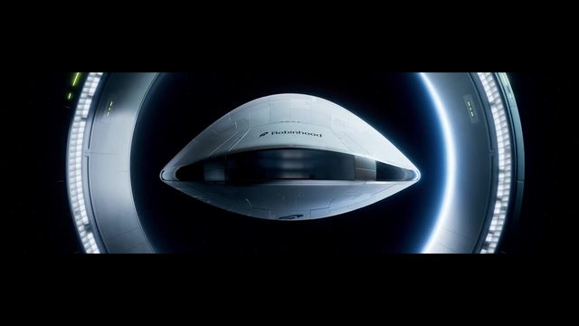
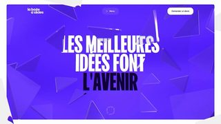
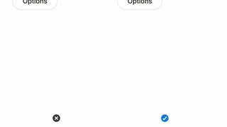
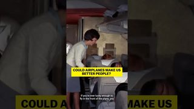
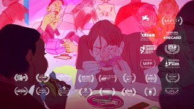
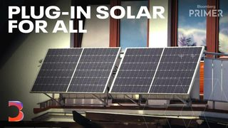
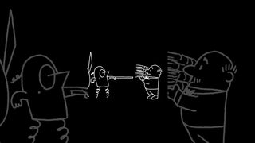

点封面在页面里播放（Vimeo / YouTube / X 需要代理；Vimeo 若没自动开始，再点一下播放键）。觉得好就点「喜欢」，有想法就写在下面的框里保存，我每天出日报前会读，存进偏好和审美库；会多找同类，但每天仍保持类型分散。
目录
- 01Hood Summit '26 Opening Titles — Engines of Creation
- 02Decoding interfaces
- 03We Saw Alien Weather (First Time Ever)
- 04TTM — Templates That Move
- 05ExitLiquidity landing
- －看过但没选进今天日报
- 拆细拆：ManvsMachine 为 Robinhood Hood Summit 2026 做的片头——超宽画幅、人名贴边、全部硬切、正对镜头再切黑
01片头片尾3D质感字体版式
Hood Summit '26 Opening Titles — Engines of Creation
ManvsMachine（Client: Robinhood） · Stash 近期刊出 / 2026 Hood Summit 【看过视频】

stashmedia.tv44.7 秒成片，完整看过（看片工具）
字体未识别（细的无衬线，全大写，字距偏开，不能确定）
主色是黑、冷白金属和行星的蓝；结构缝里有极小的绿灯
好在哪44.7 秒超宽画幅片头。黑底上只有白飞船、蓝行星和一点点指示灯绿。人名用很小的白字贴在空处或画面边缘，飞船自己在飞。镜头全是硬切，最后飞船从环形舱口正对镜头飞来，切到纯黑
可借片头不要铺满字。先定一个颜色世界（比如黑、白、一种蓝），把名称或关键词放在边缘，让主体自己动。段落用硬切，不要淡入淡出。结尾给一个正对镜头的停顿，再切黑。下面有细拆
02UI动效代码动画转场
Decoding interfaces
Emil Kowalski（@emilkowalski） · X 2026-11-23 【看过视频】
10.0 秒成片，完整看过（看片工具）
字体未识别（界面是无衬线，乱码层是等宽，不能确定具体字体）
底是近黑；字从浅灰乱码变成白和灰；库存状态和缩略图选中态用亮蓝；主按钮是米白
好在哪10 秒。先是满屏浅灰等宽字符，再从这些字里长出一张深色商品卡：左边是老式终端机的照片，右边是名称、价格和「加入购物车」。演示了两遍，第二遍能看清照片先变成彩色字符，再聚成像素。最后光标点缩略图，主图跟着换
可借介绍一个产品或界面时，不要直接淡入。可以先铺一层等宽字符，再让照片和文字从乱码里锁定成形。缩略图切换用硬切，不要加转场
03知识讲解数据可视化
We Saw Alien Weather (First Time Ever)
Cleo Abram · YouTube 2026-11-23 【看过画面（抽帧）】
抽了 12 帧（48.2 秒竖屏成片）
字体未识别（无衬线，标注是亮黄）
行星是蓝绿，标注和箭头是亮黄，背景是黑太空
好在哪48 秒竖屏。开头一颗蓝绿色行星，一条黄箭头指着「我们看见了天气」。接下来用黄字和双向箭头标出「超过 7 光年」，再把这颗行星和木星、地球并排放到一起比大小。后段有一条大气层被横切、变厚变薄，结尾是一个蓝色的无线电泡示意图
可借讲距离、大小和范围时，用一条高对比的箭头或标尺直接画在画面上，比口播数字更先被看见。同类物体并排放，大小关系一眼能读出来
04字体版式代码动画UI动效
TTM — Templates That Move
Mees Verberne、Ronald de Groot / GSAP · GSAP Site of the Day 2026-11-23 【看过画面（抽帧）】
抽了 12 帧（23.7 秒成片）
字体未识别（粗的无衬线标题，不能确定）
前半是黑底加淡紫、绿和少量粉；后半翻成白底黑字
好在哪23.7 秒。黑底上先甩出大标题 TEMPLATES THAT MOVE，旁边是紫色小花和四叶草一类的小三维物件。中间用短句讲「几秒换画幅」，彩色卡片在格子里挪位置。后段翻成白底目录，列出 Fly-through、Typography、Transitions 这些分类
可借介绍一组模板或系列时，先用一页黑底大标题抓住人，再翻成白底目录。分类名可以排成一列，旁边放很小的动态缩略图，不要一上来就把格子铺满
05字体版式UI动效
ExitLiquidity landing
Dominik Mészáros（@dom_meszaros） · X 2026-11-23 【看过画面（抽帧）】
抽了 12 帧（18.0 秒成片）
字体未识别（细的无衬线，有小写也有词标的大写，不能确定）
几乎只有黑和白，后段有一点浅蓝色作为唯一强调色
好在哪18 秒。全黑底上，一个带放射线的三角形眼睛慢慢亮起来，左右用细线连着几个小图标。下面出现一行小写白字：weniger show. mehr echtes trading。后段一个浅蓝色方标闪一下，最后落到词标 ExitLiquidity
可借做偏暗的介绍页时，颜色可以只留黑、白和一种淡蓝。先让一个图形自己亮起来，字晚一点再出现，不要同时往上堆图标和口号
看过但没选进今天日报

Sparkk、Evan Fasquelle / Awwwards · 只有 4.5 秒。电紫加荧光绿，大标题很冲，不符合克制标准，而且片段太短，看不完整

Emil Kowalski（@emilkowalski） · 只有 4.7 秒，左右对比菜单从中心缩放和从按钮角缩放。原则有用，可学的编排太薄
Ripplet（Lenar Singatullov） · 59 秒游戏预告，灰石和橙色魔法质感很好，但角色和法术光占主导，不太好直接用到讲解视频里

Vox Unexplainable · 86 秒竖屏访谈，两个人对谈加关键词涂黄，几乎没有动效、转场或讲解动画

Maria Tomazou（Vimeo Staff Pick） · 用 Excel 格子做的实验短片，色彩和造型偏独立手作，不是商业精致路线

Vimeo Staff Pick · 十几分钟的动画叙事短片，机场和鹿的剧情，不是动效、片头或讲解手法参考

Agnès Patron（Vimeo Staff Pick） · 手绘作者短片，夜景房间，偏独立手作，不是商业精致路线

Bloomberg Originals · 13 分钟纪录片，前两分钟以采访和实拍为主，字效和信息图只有零星几处，不如今天的 Cleo 完整

3Blue1Brown · 简笔角色开场的数学讲解。同类长讲解 11-07 被踩过，这场精致商业感也不够，不收
Anderson Mancini / Awwwards · Three.js 赛车游戏演示。下载时 SSL 中断，而且题材是游戏关卡，不是讲解或片头手法，不再重试
60fps（@60fpsdesign） · 一条帖里堆了十几段界面微交互。上周刚被指出 Plasma 开卡「动画是好的，但是重复了」，今天不收同类
今日细拆 · 片头片尾
44.7 秒：把人名放到边上，让飞船自己飞，最后正对镜头再切黑 【看过视频】
今天周二，按轮换本应拆英雄镜头，当天没有合格的实拍剪辑，改拆这条片头。ManvsMachine 为 Robinhood 第三届 Hood Summit 做的开场，主题是 Engines of Creation。看片工具完整看完 44.7 秒。成片被做成超宽画幅，上下留黑边。颜色几乎只有黑、冷白金属和行星的蓝。人名很小，贴在空处或边缘，飞船自己在动。镜头全是硬切，没有淡入淡出。最后飞船从环形舱口正对镜头飞来，切到纯黑。
结构（44.7 秒）
- 0:00–0:02 纯黑里升起一颗行星的轮廓，背后一道光，出现很小的白字 Robinhood Presents
- 0:02–0:07 大块白色金属结构斜着划过画面；接着是环形结构慢转，中间叠上小字 HOOD SUMMIT 2026 和大字 ENGINES OF CREATION
- 0:07–0:12 镜头穿过环形结构看下面的蓝行星；然后贴着船体近景往后拉，Robinhood 的字印在金属上，一块影子从字上扫过去
- 0:12–0:24 飞船绕着行星边缘飞。人名依次出现：右边是 STARRING / VLAD TENEV，中间是 GINA PASQUA-ABELES，左侧是 ABHISHEK FATEHPURIA。人名出现时飞船还在动
- 0:24–0:35 左边缘列出一列制作人员名单，镜头再往右摇，露出快速掠过的冰环。然后从船体内部看冰晶往外飞，再给一条几乎占满画面的冰环带，右下角是 SPECIAL GUEST Q AS Q。一块深色结构从前景横着挡过行星
- 0:35–0:41 正对镜头：飞船从慢慢旋转的环形舱口中央飞来，船体上有 Robinhood 标志。大约 6 秒的接近之后，0:41 硬切纯黑，声音也停。后面几秒保持黑场，到 44.7 秒结束
节奏
前面大多是 2 到 4 秒一切。名单和冰环那一段略放慢到 4 秒，让字能被读到。最后一下正对镜头停了大约 6 秒，是全片最长的一拍，用来收住。
没有变速堆砌，也没有淡入淡出。速度快的是物体自己在飞，切点反而干净。
转场
整条片子都是硬切。上一镜头和下一镜头在形状上有呼应：环形结构、行星弧线、船体弧线会接着出现，所以切得再快也不跳。
字和画面不绑在一起切。人名是叠在继续运动的画面上，自己淡入淡出或慢慢放大，底下一个镜头可以已经在飞。
结尾是最干脆的一刀：正对镜头的飞船还在靠近，突然切黑。不要在这里加渐隐。
字、颜色和立体感
#000000 黑场 / 太空#D8E2EA 冷白金属#6EAED0 行星蓝（近似）#7CFF9A 指示灯绿（极少）
- 字体未识别。细的无衬线，全大写，字距偏开。主标题 ENGINES OF CREATION 比人名大一号，但仍留很多空
- 颜色只有黑、冷白和行星的蓝，结构缝里有极小的绿指示灯。没有橙，也没有炫光粒子当主体
- 立体感来自金属接缝、环形结构的厚度、行星大气的亮边，以及冰环在前景快速掠过时的前后层次。上下的黑边把画面压成超宽，主体更集中
对照动效实现规则
- 同一时刻一个焦点：要么看飞船，要么读人名，人名贴边，不挡主体
- 转场跟着空间走，用硬切和形状呼应，不用淡入淡出
- 颜色世界先锁死，再用极小的绿灯做细节，不另加一套炫光
在 Remotion / 代码里怎么做
先把画布做成超宽：在 16:9 里上下留纯黑边，中间才是画面。背景锁成黑，主色只准用白和一种蓝。
画面层和字层分开。画面层用硬切换镜头（或用一段 3D / 静帧推拉），不要加交叉溶解。字层用很小的白色全大写，放在左、右或中下的空处，自己用 0.3 到 0.5 秒淡入，不跟画面一起切。
结尾做一次「对着镜头过来」：主体从环形或框架中央慢慢放大，停大约 6 秒，然后一帧切到纯黑。难点是别把字放在正中间挡主体，也别在切黑之前渐隐。
放进鱼知道的片子里怎么用
比如介绍一个新工具的开头 8 到 10 秒。不要先出大标题。先给一个有体积的物体（产品、示意图或一颗简单的三维形体）在深色里慢慢动，名称用小字贴在边上。切两三次，全用硬切。最后让它正对镜头靠近一下，切黑，再接口播。颜色只留一深一浅加一种强调色。
看 Stash 报道 ↗看 Vimeo ↗